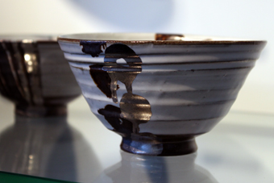

SHOP INFORMATION工房IKUKO
心の贅に出会える場所

美観地区の倉敷川沿いに位置するコンクリート打ちっぱなしのモダンな建物が印象的な「工房IKUKO」。
今年で20周年を迎える美観地区店は、全国に各地に店舗を構える洋服ブランド「IKUKO」の商品と全国各地の作家による作品の取扱い、2階ギャラリースペースでは月に3回ほどの展示会が開催されています。
※2010年7月に取材した内容です。
全国各地から厳選された逸品がラインナップ
店舗内では、岡山・倉敷を中心に「工房IKUKO」が厳選した全国約100名の作家の陶器、ガラス、古布、アクセサリーなど約200点の作品を販売しています。人気作品が多い為、受注生産で数ヶ月待ちというものも少なくはありません。店長の生関健助さんは、気になる作品を見つけると作家さんの仕事場まで出向く熱心ぶり。作品について気になるところがあれば丁寧に説明して下さるので安心です。
IKUKOや姉妹ブランドkyuisの取扱いも充実
洋服ブランド「IKUKO」を取扱うスペースでは、 姉妹ブランドである「kyuis」の取扱いも行っています。商品構成は、マタニティーやランジェリーをはじめとするルームウェアから外着やインポート小物などが並びます。自社でデザイン・縫製を行い、素材にもこだわりを持つ「IKUKO」、「kyuis」は全国にファンを増やし続けています。
「工房IKUKO」の場所と店内の様子
美観地区倉敷川沿いにある「工房IKUKO」は、倉敷芸文館の隣。 コンクリート打ちっぱなしの建物が印象的です。店内の作りはモダンで作家作品と衣料品を扱うスペースが別々にあります。2階は約300点の作品が展示出来る広いギャラリーになっています。店舗横には6台分の駐車が出来るスペースが設けられているので車での来店も安心です。
Googleマップでみる
一覧に戻る